Renowacja, restaurowanie, naprawa metaloplastyki
W naszej pracowni kowalstwa artystycznego Iron-Art Łódź, wykonujemy nie tylko balustrady kute wewnętrzne, ale także przedmioty z dziedziny metaloplastyki i meble kute.
W ramach oferty, zapewniamy usługę renowacji lub naprawy metaloplastyki. Specjalizujemy się w odnawianiu przedmiotów, które straciły swoją estetykę, przedmiotów, które uległy uszkodzeniu lub tych, które wymagają odnowienia ze względu na swój wiek.
Zapraszamy do współpracy, a także do zapoznania się z efektami naszych działań. Polecamy skontaktować się z pracownią Iron-Art, aby dowiedzieć się więcej na temat możliwości rekonstrukcji metaloplastyki.
Renowacja Krzyża Procesyjnego
Jednym z efektów naszej pracy jest Krzyż Procesyjny, który został odrestaurowany w naszej pracowni kowalstwa artystycznego Iron-Art w Łodzi.
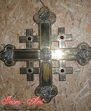
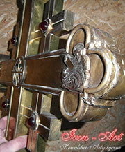


Renowacja Prezbiterium
W naszej pracowni kowalstwa artystycznego pracowaliśmy również nad odrestaurowaniem Prezbiterium, którego zdjęcia przed i po przedstawiamy poniżej.
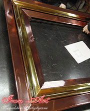
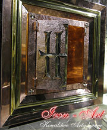
Renowacja wiekowej skrzyni
Dwustuletnia skrzynia była obiektem naszej pracy. Poddaliśmy ją rekonstrukcji, naprawiając 2/3 jej okuć i niwelując wszelkie ubytki. Drewno zostało dokładnie oczyszczone i przygotowane do bejcowania. Skrzynia nie była odnawiana od kilkudziesięciu lat.
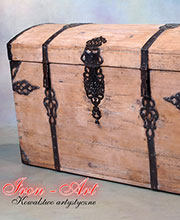
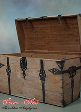
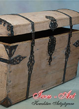
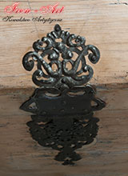
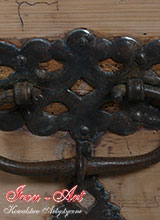
Lampa z XIX wieku - Perła wsród zdobyczy
Pragnę zaprezentować Państwu wyjątkowe znalezisko, które trafiło w moje ręce na targu starych rzeczy. Ponadczasowa, wiekowa lampa została kupiona za 600 zł. Był to stary, nierzucający się w oczy przedmiot, który po częściowej renowacji i reanimacji, okazał się historyczną perełką.
Lampa, nad którą przeprowadzono prace renowacyjne w pracowni kowalstwa artystycznego, prawdopodobnie pochodzi z okresu ok XIX wieku. Wymagała i wciąż wymaga jeszcze wiele pracy, aby zyskała nowego, zachwycającego wyglądu, lecz już teraz stwierdzić można, że jest to cenna zdobycz.
Stara i zniszczona lampa, która nie prezentowała się efektownie i nie zachęcała do zakupu, już niebawem stanie się perłą. Jest to doskonały przykład na to, że wśród niepozornych, zniszczonych przedmiotów, których nikt już nie używa, można znaleźć coś ponadczasowego, czemu warto dać drugie życie i wydobyć jego piękno.
XIX wieczna lampa, która została poddana renowacji w pracowni kowalstwa artystycznego w Łodzi, została Państwu zaprezentowana w całej okazałości.
Zachęcam do zapoznania się z innymi wyrobami kowalstwa artystycznego Iron-Art!
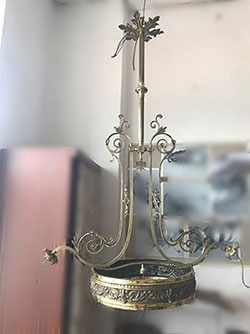
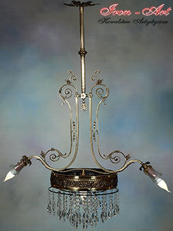